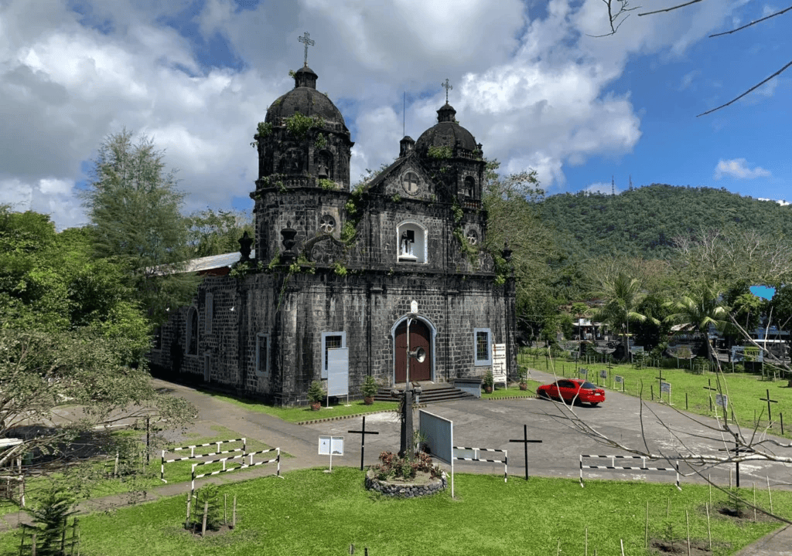
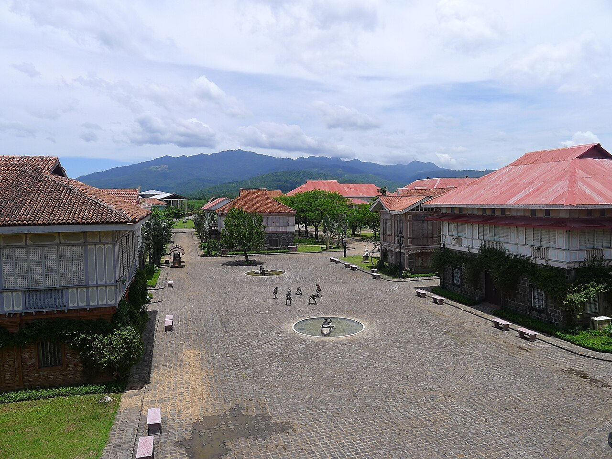

Tracing the roots and traditions of the Bataeños.

Built in 1587, this is one of the oldest churches in the Philippines. It served as a silent witness to the rich religious history during the colonial period.
Learn More →
Experience the grandeur of Filipino-Spanish architecture through preserved stone houses (Bahay na Bato) that tell stories of 18th-century life.
Explore History →